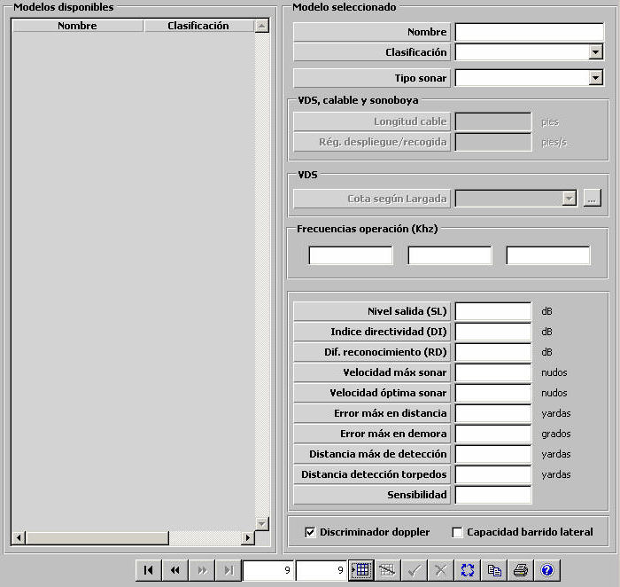

Sonar Activo

Descripción de los parámetros:
Tipo de Sonar: Puede tomar los siguientes valores:
Este parámetro determina si el sonar activo puede ser desplegado (VDS y Calable) o si puede estar montado en sonoboyas.
Longitud del cable: Este parámetro determina la máxima longitud del cable del sonar activo tipo VDS, Calable o de sonoboya y por tanto condiciona la máxima profundidad a la que puede ser desplegado. Este parámetro sólo puede ser introducido si se ha seleccionado tipo de sonar VDS, Calable o de sonoboya.
Unidades: pies
Rango: 0 – 9999
Régimen despliegue/recogida: Este parámetro determina la velocidad con el que el cable del sonar activo tipo VDS, Calable o de sonoboya es desplegado o recogido. Este parámetro sólo puede ser introducido si se ha seleccionado tipo de sonar VDS, Calable o de sonoboya.
Unidades: pies / segundo
Rango: 0 – 100
Cota según Largada: Esta tabla modela la cota a la que se sumerge el sonar activo tipo VDS cuando se encuentra desplegado, según la longitud de cable desplegado (largada) y velocidad sobre el fondo de la unidad propia. Ver apartado Cota según Largada. Este parámetro sólo puede ser introducido si se ha seleccionado tipo de sonar VDS.
Frecuencias de Operación (kHz): Determinan las tres posibles frecuencias de operación del sonar activo que pueden ser seleccionadas por el operador. El valor de frecuencia de operación del sonar activo es tenido en cuenta en el cálculo del exceso de señal que recibe el sonar de un posible contacto. El valor de exceso de señal junto con el factor batítérmico determinarán la probabilidad de obtener detección sonar del contacto. Si el sonar activo es tipo sonoboya, sólo se podrá introducir una única frecuencia de operación.
Unidades: kHz
Rango: 0 – 999,99
Nivel de salida (SL): Este parámetro determina el nivel de ruido radiado por el sonar activo. Es tenido en cuenta en el cálculo del exceso de señal que recibe el sonar de un posible contacto.
Unidades: dB
Rango: 0 – 9999
Índice de Directividad (DI): Este parámetro modela la directividad del sonar activo. Es tenido en cuenta en el cálculo del exceso de señal que recibe el sonar de un posible contacto.
Unidades: dB
Rango: 0 – 999
Diferencial de Reconocimiento (RD): Este parámetro modela el umbral de detección del sonar activo. Es tenido en cuenta en el cálculo del exceso de señal que recibe el sonar de un posible contacto.
Unidades: dB
Rango: -999 – 999
Velocidad Máxima del Sonar: Este parámetro determina la velocidad máxima de la plataforma para la cual el sonar activo puede obtener detecciones. Se considera que cuando la plataforma tiene una velocidad sobre el agua superior a ésta, el nivel de ruido propio recibido por el sonar activo impide que obtenga detecciones. Si el sonar activo es tipo sonoboya, no se podrá introducir este parámetro.
Unidades: nudos
Rango: 0 – 100
Velocidad Óptima del Sonar: Este parámetro representa la velocidad de la plataforma a la cual el sonar activo recibe el menor nivel ruido propio posible. Es tenido en cuenta en el cálculo del ruido propio en banda ancha y estrecha recibido por el sonar activo en función de la velocidad sobre el agua de la plataforma. Si el sonar activo es tipo sonoboya, no se podrá introducir este parámetro.
Unidades: nudos
Rango: 0 – 100
Error Máximo en Distancia: Este parámetro modela el error con el que el modelo de Sonar Activo obtiene la distancia de las detecciones. Dicho error se calcula para cada detección como un valor aleatorio entre –error y error, siendo “error” el valor asignado a este parámetro.
Unidades: yardas
Rango: 0 – 9999
Error Máximo en Demora: Este parámetro modela el error con el que el modelo de Sonar Activo obtiene la demora de las detecciones. Dicho error se calcula para cada detección como un valor aleatorio entre –error y error, siendo “error” el valor asignado a este parámetro.
Unidades: grados
Rango: 0 – 9,99
Distancia Máxima de Detección: Este parámetro determina un límite máximo para la distancia de detección, de forma que el sonar activo sólo puede obtener detecciones a distancias menores o iguales que ésta.
Unidades: yardas
Rango: 0 – 99999
Distancia de Detección de Torpedos: Este parámetro determina un límite máximo para la distancia de detección de torpedos, de forma que el sonar activo sólo puede detectar torpedos en el agua a distancias menores o iguales que ésta. Esta distancia también se usa como límite máximo para la detección de minas.
Unidades: yardas
Rango: 0 – 99999
Sensibilidad: Este parámetro es tenido en cuenta por el modelo de Sonar Activo para calcular el número de falsos ecos aleatorios que se producen. Cuanto mayor es la sensibilidad del equipo, mayor es el número de falsos ecos que se producen.
Unidades: ---
Rango: 0 – 1
Discriminador Doppler: Este parámetro determina si el sonar activo tiene capacidad de calcular el doppler de las detecciones obtenidas. Si el sonar tiene esta capacidad podrá presentar al operador la magnitud del doppler: NO DOPPLER, DOPPLER ALTO, DOPPLER BAJO.
Capacidad de Barrido Lateral: Este parámetro determina si el sonar activo tiene capacidad de barrido lateral. Si el sonar tiene esta capacidad podrá presentar al operador la clasificación del contacto (superficie o submarino).